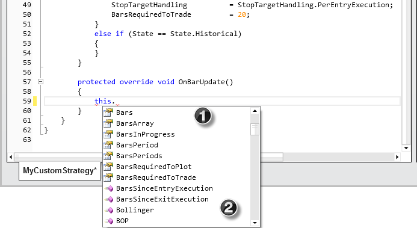
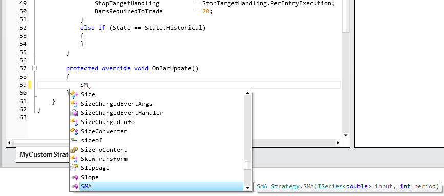
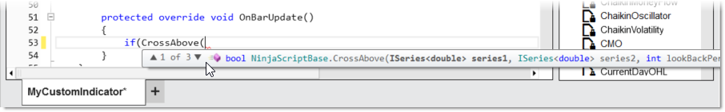

|
<< Click to Display Table of Contents >> Intelliprompt |


|
Intelliprompt
|
<< Click to Display Table of Contents >> Intelliprompt |
|
Intelliprompt is a form of automated autocompletion popularized by the Microsoft Visual Studio Integrated Development Environment. It also serves as documentation and disambiguation for variable names, functions and methods. Intelliprompt is built into the NinjaScript Editor resulting in an efficient environment to code your custom indicators and strategies.
 How to access the Intelliprompt list box
How to access the Intelliprompt list box
Within the NinjaScript Editor you can type "this." to bring up the Intelliprompt list box. The list box contains all methods (functions) and properties available for use. You can select a method or property by simply selecting it via your mouse, or scrolling with your up or down arrow key. Pressing either the "Tab" or "Enter" key will automatically insert the code into the NinjaScript Editor. While in the list box, you can press any letter key to rapidly scroll down to the next property or method beginning with the letter of the key you pressed.
In the image below:1. A property 2. A method

If you know that you want to access the Simple Moving Average indicator method which is SMA(), and you think it starts with "SM" enter "SM" and press CTRL-Space Bar which would display the Intelliprompt list box below.

Pressing CTRL + space bar after any text will always either•Bring up the Intelliprompt list box with related methods and properties •Automatically insert code if the text can uniquely identify a method or property •More keyboard shortcuts could be reviewed under this link. |
 Understanding Method Description and Signatures
Understanding Method Description and Signatures
When selecting a method1. Type in "(" to display the method description and signature 3. In the image below you will see "1 of 3" which means that we are looking at the first of three available method signatures. You can scroll through all available signatures by pressing on the arrow up and down keys.

What is a method signature?A method signature is a common term used in object-orientated programming to uniquely identify a method. This usually includes the method name, the number and type of its parameters and its return type. From the image above, the DMI() method represents the Dynamic Momentum Index indicator has two method signatures:
DMI(int period) |